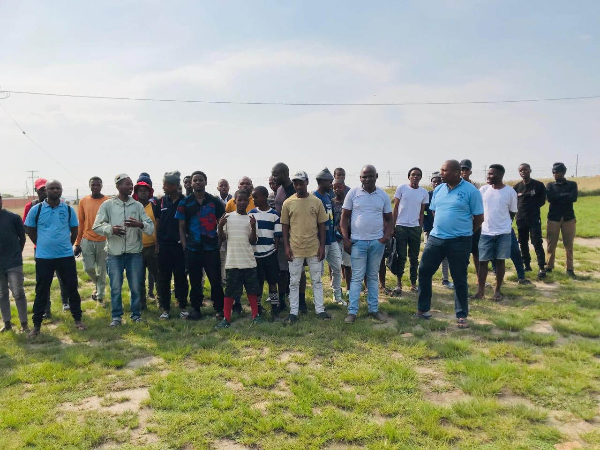
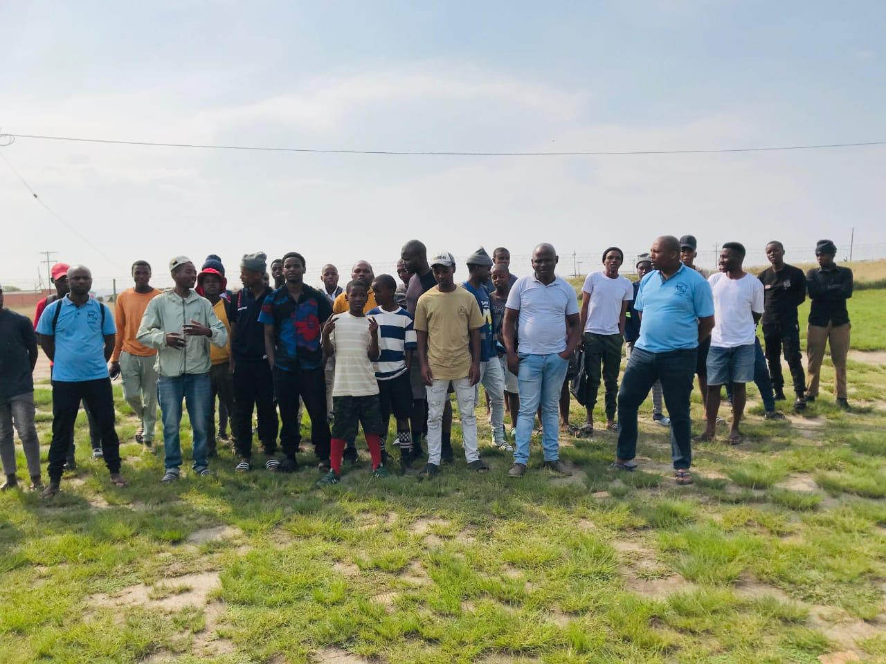

Vision
To restore moral fiber by winning men through Christ-centered initiatives.
Description
This portfolio engages men of all ages through sporting activities, with a particular focus on supporting those struggling with substance abuse.
Key initiatives include:
- The annual Presidential Cup Soccer Tournament, bringing together regions in healthy competition.
- Reviving school sports in townships and rural areas.
- Hosting a Regional Family Day every September, promoting fathers as leaders of their families.
Through these programs, many men have reclaimed their roles as protectors of their households, while children are encouraged to focus on education and sports rather than the streets.